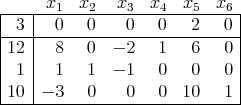
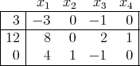
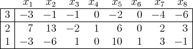
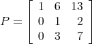
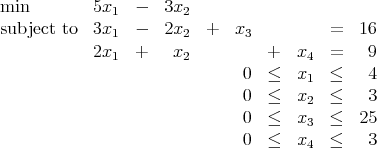
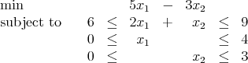

First Exam, Tuesday, September 30, 2008.
You may use any result from your notes or a homework that is clearly stated. You may use one
sheet of handwritten notes, but no other sources. The exam consists of five questions, and lasts one
hundred and ten minutes.
- (15 points; each part is worth 5 points.)
The following tableau represents a linear program in standard form:

- Give an optimal basic feasible solution to this linear program.
- Find another optimal basic feasible solution.
- Show that the set of optimal solutions is unbounded.
- (21 points. Each part is worth 7 points.)
The following tableau represents a linear program in standard form:

- There are two nonbasic variables. What are the simplex directions corresponding
to each of these nonbasic variables?
- Find the steplengths in the directions found in part 2a. Hence find the new basic
feasible solutions that would be obtained by introducing each of these nonbasic
variables.
- Show that the optimal solution can be found in one iteration by choosing the
entering variable appropriately.
- (20 points)
Consider the following tableau for a standard form linear program:

Several simplex pivots are taken. The pivot matrix corresponding to this sequence of pivots
is:

The new basic sequence consists of x1 and x3.
- (6 points) What is the basic feasible solution obtained as a result of this sequence
of pivots? What is its value?
- (7 points) Show that the solution you obtained in part 3a is not optimal.
- (7 points) How would you next update the pivot matrix?
- (24 points; each part is worth 6 points)
The variables in the following linear programming problem have upper bounds:

Slack variables are not introduced for the upper bound constraints. Instead, variables can be
nonbasic at either their upper or lower bounds.
- Show that x3 must be basic in any basic feasible solution. (Hint: Consider the
bounds on x1 and x2.)
- Find all the basic feasible solutions where at least one variable is at its upper
bound.
- Show that the original linear program is equivalent to the following linear
program:

(For the purposes of this question, two linear programs are equivalent if any feasible
solution in one can be mapped to a feasible solution in the other with the same
objective value.)
- Plot the feasible region of the linear program in part 4c. Mark each of the basic feasible
solutions you found in part 4b. Find the optimal solution graphically.
- (20 points; each part is worth 5 points)
A company manufactures parts i = 1,…,m in weeks t = 1,…,n, where each unit of part i
requires ai,k units of production resource k = 1,…,q and has value vi. Production resource
capacities bk cannot be exceeded in any period and part demands di,t must be met.
Express each of the following as linear constraint(s) in these parameters and the
nonnegative decision variables xi,t := number of units of i produced in week t and
zi,t := inventory of product i held at the end of period t. Initial inventories all
= 0.
- No production capacity can ever be exceeded.
- The total value of held inventories should never exceed 200.
- Quantities of each part i available after week 1 should balance with demand and
accumulated inventory.
- Quantities of each part i available after weeks 2,…,n - 1 should balance with
demand and accumulated inventory.